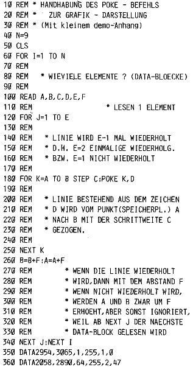
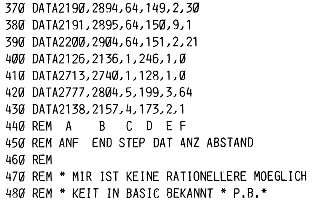

Nascom Journal |
Juli/August 1982 · Ausgabe 7/8 |
Als Fortsetzung zur letzten „Seite für Einsteiger“ nun ein Programm von Peter Brendel, das Ihnen die Möglichkeit gibt, die Poke Befehle nochmals praktisch zu erproben. Er hat es speziell Hans-Dieter Schneider gewidmet und dazu noch einen Bildschirm-Atlas des Nascom beigelegt, um Benutzern von anderen Systemen den Nascom Bildschirm-Aufbau durchsichtiger zu machen. (Nascom-Benutzer werden sicher auch dankbar für diese Programmierhilfe sein).

Bildschirm-Atlas auf der nächsten Seite!
Im Journal 2-82 wurden die Ladebefehle erklärt. Hier nun endlich die Fortsetzung, um dieses Thema abzuschließen.
In der ersten Folge wurden die Register I und R ausgespart. Das I Register ist ein „Interrupt (=Unterbrechung) Adressen Register“. Es enthält das höherwertige Byte einer Adresse, die nach einem (Hardware-) Interrupt angesprungen wird, Dies ist eine besondere Anwendung, die auch in einer gesonderten Fortsetzung behandelt werden sollte. (Wäre doch etwas für Sie, Herr Fößel!?)
Das R (Refresh=Auffrischen)- Register wird von der CPU verwendet, um die Speicherinhalte der dynamischen RAM- Bausteine vor dem „Verschwinden“ zu bewahren. Normalerweise müssen wir uns beim Programmieren überhaupt nicht damit beschäftigen, denn die CPU macht das automatisch bei jedem Einholen eines Befehls.
Eine Möglichkeit, das R-Register auch in einem Programm zu benutzen, ist das Erzeugen einer Zufallszahl zwischen 0 und 255 (0 und FF hex), Der Befehl ED 4F (=LD A, R) lädt dann eine zufällige Zahl in den Akku, Allerdings wird die Zahl nach einer bestimmten Anzahl von Maschinenzyklen wiederholt; bei den meisten Anwendungen (z.B. Spielen) genügt aber diese „Zufälligkeit“. Nun aber zurück zu unseren (inzwischen hoffentlich) vertrauten Registerpaaren AF, HL
| Seite 37 von 60 |
|---|